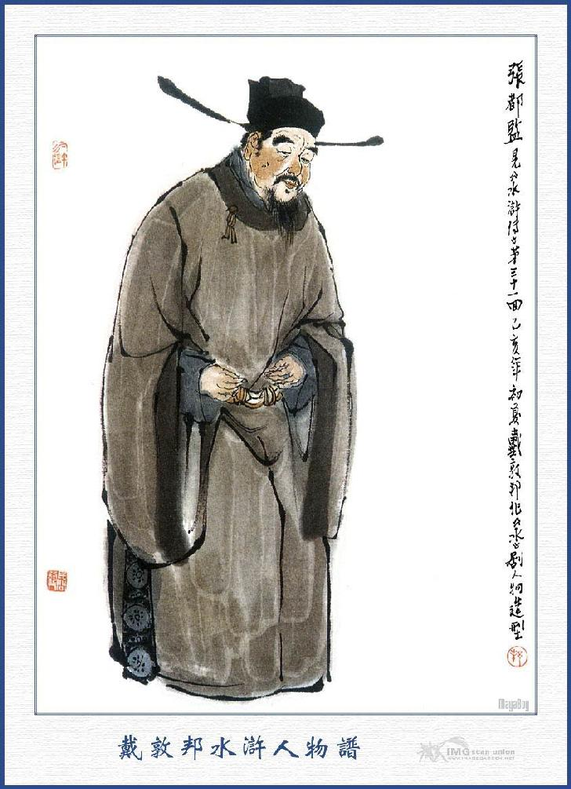
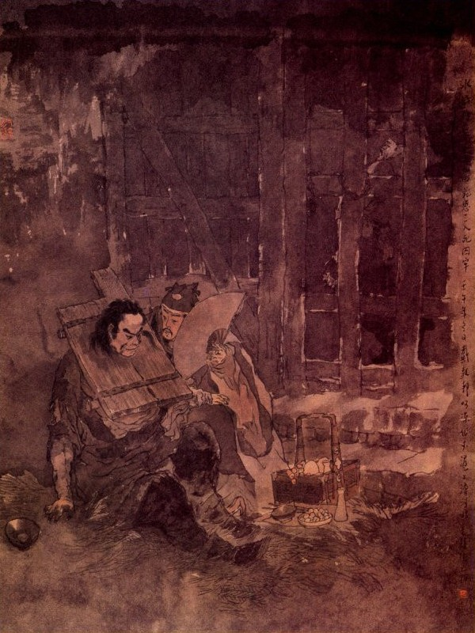
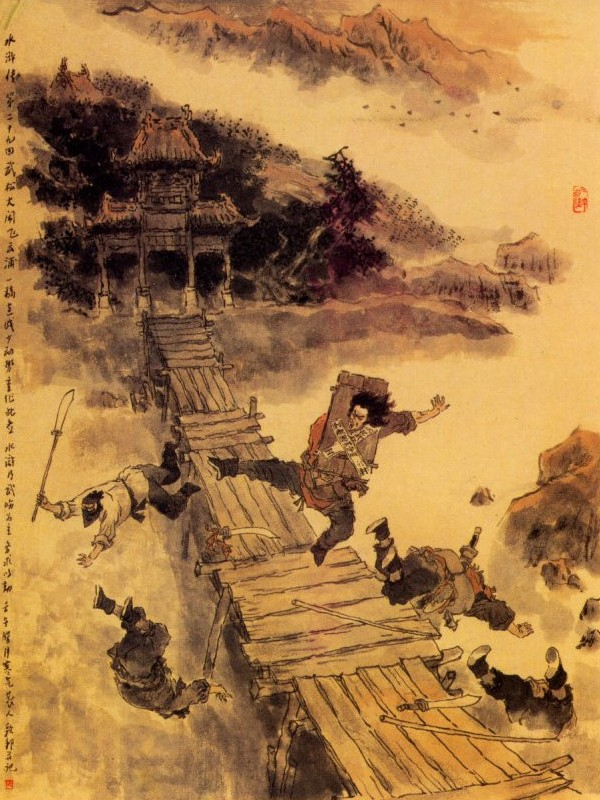

Khi đó Võ Tòng trỏ vào mặt Tưởng Môn Thần mà bảo rằng:
- Điều thứ nhất ngươi phải đi khỏi rừng Khoái Hoạt; bao nhiêu đồ đạc để lại đây trao trả cho chủ củ là Kim Nhãn Bưu Thi Ân. Ai cho ngươi được chiếm nhậm chốn này?
Tưởng Môn Thần vội vàng kêu van rằng:
- Xin vâng. Xin vâng.
- Điều thứ hai: Bây giờ ta tha ngươi, ngươi hãy đi mời tay anh hùng đầu chóp ở chốn này, để đến đây tiếp chuyện với Thi Ân.
- Vâng, chúng tôi xin theo được.
- Điều thứ ba: Từ đây phải lập tức trở về làng nước, không cho ở đất Mạnh Châu đây. Nếu còn vất vưởng loanh quanh, ta gặp một lần là đánh một lần, bắt gặp mười lần là đánh mười lần, nhẹ ra thì đánh cho kỳ ốm mà nặng ra thì đánh chết cũng nên, ngươi nghĩ sao?
Tưởng Môn Thần kêu luôn lên rằng:
- Được, tôi xin vâng lời hết thảy.
Võ Tòng nghe vậy, bèn kéo Tưởng Môn Thần đứng dậy, thấy mặt mũi tái nhợt, máu chảy đầm đìa, chàng liền trỏ vào mặt mà mắng rằng:
- Ngươi phải biết con hổ trên núi Cảnh Dương, ta chỉ đánh ba cẳng tay cũng đủ chết, nhà ngươi đây phổng sức lực được là bao nhiêu? Muốn sống phải trao trả ngay, chậm một tý là ta đánh chết.
Tưởng Môn Thần nghe đến đó mới biết là Võ Tòng, bèn vâng dạ luôn mồm mà xin giao trả.
Đương lúc ấy Thi Ân dẫn hai ba mươi tên lính đến, định để đánh giúp, khi thấy Võ Tòng đã đánh được Tưởng Môn Thần rồi thì lấy làm vui mừng vô hạn. Võ Tòng trỏ vào Tưởng Môn Thần mà nói rằng:
- Hiện chủ cũ ở đây rồi, ngươi phải mau mau trả ngay và cho người đến nói lại, mau đi.
Tưởng Môn Thần đáp rằng:
- Xin mời hảo hán hãy vào trong hàng đã.
Nói đoạn liền dẫn Võ Tòng cùng mọi người vào trong tửu điếm. Khi vào tới nơi, thấy rượu chè be bét cả ra nhà cửa, mấy đứa trong chum ngoi ngóp bò lên ướt như chuột lột, còn đám người nhà thì chạy mất tăm, không còn ai dám lảng vảng ở đấy. Bấy giờ Võ Tòng ngồi vào trong ghế, quát bảo Tưởng Môn Thần phải mau mau thu thập hành lý, tống chị đàn bà đi trước rồi nhất diện sai bắt mấy đứa tửu bảo không bị thương, cho đi tìm mươi người đầu sỏ ở quanh đấy, đến để bàn giao. Khi mọi người đã đến đông đủ. Võ Tòng liền sai lấy các thứ rượu ngon ra dọn bàn, mời mọi người cùng uống. Được một lát Võ Tòng nói với chúng rằng:
- Dám thưa các vị cao lân tôi từ khi ở huyện Dương Cốc sang đây, nghe nói Khoái Hoạt Lâm vốn là một cái cơ nghiệp của tiểu Quản Doanh Thi Ân ngày trước, sau bị Tưởng Môn Thần đến đó ỷ thế mà lấn hiếp cướp mồi. Tôi đây tuy không có can thiệp gì vào đó, song tính tôi bình sinh hay đánh những kẻ tham mê vô lý giữa đường thấy sự bất bình, tất phải ra tay trừ khử, dẫu chết cũng cam tâm. Ngày này bản ý tôi muốn đánh chết Tưởng Môn Thần, để trừ cái hại cho thiên hạ, song tôi còn vị nể các vị cao lân đây, nên đã giữ mạng anh ta ở đó. Hiện bây giờ anh ta phải lập tức đi xứ khác, bằng tôi còn gặp mặt ở đây thì xin theo như con hổ trên núi Cảnh Dương mà trị.
Bấy giờ chúng nghe nói, mới biết Võ Tòng chính là anh hùng đánh hổ trên núi Cảnh Dương, liền tề thanh đứng dậy nói đỡ Tưởng Môn Thần rằng:
- Xin hảo hán thư tâm, tức khắc Tưởng Môn Thần sẽ trả lại chủ cũ.
Tưởng Môn Thần kinh sợ vô cùng, liền đem tất cả các đồ đạc trao cho Thi Ân rồi thuê một cỗ xe, xếp một ít hành lý và bẽn lẽn từ tạ mọi người mà đi thẳng. Đoạn rồi Võ Tòng cùng Thi Ân mời mọi người ở đó uống rượu, mãi đến chiều hôm mới tan. lão Quản Doanh nghe tin Thi Ân lại chiếm được Khoái Hoạt Lâm, liền cưỡi ngựa đi đến tửu điếm tạ ơn Võ Tòng rồi ăn mừng luôn mấy hôm rất vui vẻ. Khi đó ở Khoái Hoạt Lâm mọi người nhận biết Võ Tòng thì ai nấy đều lấy làm kính trọng mà đến chào mừng suốt lượt. Thi Ân liều lưu Võ Tòng lại ở đó rồi sửa sang hàng quán buôn bán rất là sầm uất gấp năm gấp bảy khi xưa. Từ khi Thi Ân nhờ được Võ Tòng báo thù trả oán, lại chiếm được lợi quyền đối với các hàng rượu sòng bạc hơn trước thì trong lòng rất khâm phục Võ Tòng không khác gì cha mẹ sinh ra. Thấm thoát hơn một tháng trời, bây giờ nắng hè đã nhạt, ngọn gió thu đã rải rác hơi sương trên mặt đất. Một hôm Thi Ân đương ngồi trong tửu điếm, cùng Võ Tòng nói chuyện côn quyền. Chợt đâu có ba tên lính dắt một con ngựa đến trước cửa điếm mà nói rằng:
- Chúng tôi vâng lệnh Đô Giám tướng công, nghe nói Võ Đô Đầu ở đây.
Thi Ân nhận biết mấy tên đó là người nhà Đô Giám binh mà Trương Mông Phương ở đất Mạnh Châu, liền chạy ra mà hỏi rằng:
- Các bác hỏi Đô Đầu làm chi?
Đám kia trả lời:
- Chúng tôi vâng lệnh Đô Giám Tướng Quân nghe nói Võ Đô Đầu là bậc hảo hán, nên sai chúng tôi đến đây để mời, hiện có thiếp của tướng công ở đây.
Thi Ân cầm lấy cái thiệp xem xong nghĩ thầm trong bụng: "Trương Đô Giám là Thượng Ty của phụ thân ta thì sai khiến điều gì không được! Huống chi Võ Tòng lại là một người bị tội đến đây cũng thuộc quyền người ta cai trị, có lẽ nào mình dám giữ lại mà không cho đi?” Nghĩ đoạn rồi quay vào nói với Võ Tòng rằng:
- Nay có quan Trương Đô Giám sai người mang ngựa đến đây, để đón Huynh trưởng, vậy Huynh trưởng nghĩ sao?
Võ Tòng vốn là người cương trực xưa nay, không cần chi hỏi đến điều ủy khúc, bèn đáp ngay rằng:
- Người ta đã đến tìm mình thì cứ đi một chuyến xem sao?
Nói đoạn liền thay khăn áo, đem một tên nhỏ theo hầu rồi lên ngựa theo vào Mạnh Châu. Khi tới trước cửa dinh Đô Giám, Võ Tòng liền xuống ngựa, theo bọn lính đi vào trong dinh. Bấy giờ Trương Đô Giám đương ngồi ở tiền sảnh, thấy nói Võ Tòng bước vào sảnh cúi đầu lễ chào rồi khoanh tay đứng ở một bên. Trương Đô Giám hỏi Võ Tòng rằng:
- Ta nghe nói anh là một tay Đại trượng phu hảo nam tử anh hùng vô địch, dám vì người sống cũng liều, vậy nay trong quân ta còn thiếu một người như thế, chẳng hay anh có chịu giúp ta làm một tay thân mật ở trong nhà hay không?

TRƯƠNG ĐÔ GIÁM
Võ Tòng cúi đầu tạ ơn rằng:
- Chúng tôi là một kẻ tù tội ở bên dưới, nếu nay tướng công lại có lòng đề cử lên cho thì chúng tôi xin vâng lệnh theo hầu dưới trướng.
Đô Giám nghe nói cả mừng, bèn sai lấy hoa quả rượu ngon lên và từ rót mời Võ Tòng uống thực say rồi sai dọn một gian phòng ở nhà dưới để Võ Tòng nghỉ. Sáng hôm sau lại sai người đến nhà Thi Ân, lấy các đồ hành lý cho Võ Tòng rồi lưu luôn ở trong dinh Đô Giám. Từ đó Đô Giám đối với Võ Tòng rất là thân mật, không lúc nào là không gọi đến luôn luôn. Dần dần để cho Võ Tòng đi lại khắp chốn nhà trong nhà ngoài, chẳng khác chi họ hàng thân thích vậy. Đô Giám lại cho gọi thợ, may áo mùa thu cho Võ Tòng mặt rất là tử tế.
Võ Tòng cũng lấy làm vui lòng, gặp một người ân đức như vậy, nên hết sức trông nom mà không chút gì trễ. Bởi vậy chàng cũng không có lúc nào trở về Khoái Hoạt Lâm mà nói chuyện với Thi Ân được nữa. Thỉnh thoảng Thi Ân có cho người thăm hỏi Võ Tòng, song nhiều khi bị người ngăn trở ở ngoài mà không được gặp. Được ít lâu nhiều người nhờ đến Võ Tòng nói giúp việc quan, Trương Đô Giám đều thuận tình cho cả. Nhân thế mà không bao lâu các đồ kim ngân tài bạch của dân gian tặng đãi rất nhiều, Võ Tòng liền mua một cái hòm mà chứa cả vào đó.
Một hôm giữa độ Trung Thu tháng tám, Trương Đô Đầu bày tiệc trông trăng ở dưới lầu Uyên Ương trong một khu nhà sâu kín rồi cho Võ Tòng vào dự tiệc. Võ Tòng có quyền thuộc Đô Giám đều ngồi ăn tiệc ở đó thì có ý rụt rè, uống một chén rượu rồi đứng lên mà cất lẻn đi.
Trương Đô Giám thấy vậy thì hỏi rằng:
- Đương uống rượu, sao lại đi đâu thế?
Võ Tòng khép nép thưa rằng:
- Ân tướng có lòng yêu, ban cho ăn uống, song trên có ân tướng lại có Phu Nhân cùng quý quyến ở đây, chúng tôi đâu dám mạn phép như thế!
Trương Đô Giám cười mà bảo rằng:
- Anh lầm rồi, ta kính anh là một người nghĩa sĩ, nên mới đặc cách mời vào đây uống rượu cũng như người nhà thân vậy. Sao lại chối từ như thế?
Võ Tòng bẩm rằng:
- Chúng tôi là một kẻ phạm tội, không khi nào dám thế xin ân tướng tha cho.
Trương Đô Giám lại than vãn rằng:
- Nghĩa sĩ không nên nghĩ tỉ mỉ làm gì, ở đây có ai là người ngoài đâu! Nghĩa sĩ cứ ngồi uống rượu cho vui.
Võ Tòng hai ba lầm từ chối. Trương Đô Giám nhất định không nghe, bắt Võ Tòng phải cùng ngồi uống rượu. Võ Tòng không thể nào từ chối được, đành phải xin phép rồi bắc cái ghế xa xa phía dưới mà nghiêng mình ngồi đó. Trương Đô Giám liền sai con hầu lên rót rượu mời Võ Tòng uống.
Uống được dăm ba chén rồi Trương Đô Giám lại bảo với Võ Tòng rằng:
- Đại trượng phu uống rượu, cần gì phải dùng đến thứ chén nhỏ nhen này?
Nói đoạn sai lấy chén lớn rót luôn mấy chén để mời Võ Tòng. Bấy giờ bóng Nga vằng vặc, soi cửa bên đông. Võ Tòng uống rượu chừng đã hơi hơi chếnh choáng, dần dần quên cả lễ độ giữ gìn mà uống tràn một lúc. Trương Đô Giám lại gọi con tì nữ đáng yêu duyên dáng là Ngọc Lan ra để ca mừng tiệc rượu. Đoạn rồi lại trỏ bảo Ngọc Lan rằng:
- Ở đây không có ai xa lạ, duy có Võ Đô Đầu thì là một người tâm phúc của ta, vậy nhân tết Trung Thu này, người nên hát khúc "Trung Thu bối Nguyệt" để cho chúng ta nghe.
Ngọc Lan vâng lời cầm phách gõ rồi cất lên tiếng hát bài ca Trung Thu thủy điêu của ông Tô Đông Pha rằng:
Cái bóng trăng kia có tự bao giờ!
Tay nâng chén rượu hỏi khật khờ dăm câu:
Chốn cung Trời muôn trượng cao cao,
Đêm nay là cái đêm nao hỡi trời?
Anh cũng toan cưỡi gió về chơi,
E khi lầu ngọc xa khơi thêm lạnh lùng:
Xênh xang múa giỡn bóng trăng trong,
Khác nào vơ vẫn trong vòng trần ai?
Buông rèm châu thấp thoáng xa xôi,
Can chi hờn giận lựa thời em mới trốn khuôn?
Khách trên đời tan hợp với vui buồn,
Bóng trăng kia khi mờ tỏ với khuyết tròn kể cũng bao phen?
Trải ngàn xưa ai đã vững chu tuyền!
Lòng riêng chỉ nguyện với bóng thuyền cho được dài lâu.
Ngọc Lan hát xong đặt phách xuống đứng ra một bên. Trương Đô Giám lại sai Ngọc Lan đi rót rượu khuyên mời. Ngọc Lan vội vàng vâng lời rót một chén rượu đưa mời Đô Giám, một chén rượu đưa mời phu nhân rồi đến chén thứ ba đưa mời Võ Tòng.
Võ Tòng cúi đầu xa xa đứng dậy, nâng tiếp chén rượu mời; xin phép Đô Giám cùng phu nhân rồi mới dám uống. Trương Đô Giám lại trỏ Ngọc Lan mà bảo Võ Tòng rằng:
- Con bé này thông minh lắm, không những là thuộc biết âm luật ca hát mà lại giỏi nghề thêu vá nữa. Nếu nghĩa sĩ không chê là tầm thường thì trong mấy bữa nữa ta sẽ chọn ngày lành tháng tốt mà cho cùng nhau kết lứa nhân duyên, nghĩa sĩ nghĩ sao?
Võ Tòng đứng dậy vái mà rằng:
- Chúng tôi có khi nào dám mạn phép quá thế?
Trương Đô Giám cười rằng:
- Ta đã nói vậy tất là phải làm, anh chớ nên từ chối, không khi nào phụ lời ta mới được!
Nói đoạn lại bắt Võ Tòng uống luôn ba chén rượu nữa. Bây giờ đêm đã hơi tĩnh, Võ Tòng nghe chừng hơi rượu đã hăng, chàng sợ lỡ ra có điều thất lễ, bèn đứng dậy xin phép cáo lui. Khi về tới phòng chàng thấy trong bụng còn no đầy chưa có thể ngủ được, liền cởi áo bỏ khăn lấy cái gậy ra giữa sân, đứng dưới bóng trăng trong mà múa chơi một lúc. Hồi lâu ngửa mặt nom trời, ước đã vào khoảng canh ba, chàng liền cất gậy vào phòng để nghỉ. Chợt đâu ở nhà trong có tiếng kêu cướp ầm ĩ cả lên. Võ Tòng nghe thấy vậy trong lòng tự nghĩ: “Trương Đô Giám có lòng yêu ta như vậy, hiện bây giờ trong nhà có cướp, tất nhiên ta phải vào cứu mới xong", chàng nghĩ đoạn, vội vớ lấy thanh gậy mà chạy thốc vào nhà trong.
Khi ấy gặp nữ Ngọc Lan, lật đật ở trong nhà chạy ra, trỏ bảo Võ Tòng rằng:
- Một thằng cướp chạy vào lối vườn hoa ở đằng sau kia.
Võ Tòng nghe nói liền gậy chạy rảo vào vườn hoa, tìm khắp lượt không thấy gì, lại quay trở ra. Đương khi lật đật chạy dưới bóng cây nhấp nhoáng, chàng ta vô ý vấp ngay phải quãng thừng chăng ngang lối đi mà ngã đâm nhào xuống đất. Bỗng đâu thấy bẩy tám tên lính đổ xô ra reo ầm lên rằng:
- Cướp đây rồi, bắt lấy.
Đoạn rồi chúng co giây, trói ngay Võ Tòng lại. Võ Tòng kêu vội lên rằng:
- Tôi đây, không phải cướp đâu?
Chúng nghe nói, mặc kệ cứ trói ghi lại mà không phân phải trái chi cả. Một lát thấy ở trên nhà sảnh có đèn đóm sáng trưng rồi thấy Trương Đô Giám quát lên rằng:
- Trói cổ nó đem đến đây.
Chúng nghe nói, đều túm vào lôi kéo Võ Tòng vừa đi vừa đánh mà dong lên trước sảnh.
Võ Tòng liền kêu lên rằng:
- Tôi là Võ Tòng đây có phải cướp đâu?
Trương Đô Giám nom thấy cả giận, biến hẳn nét mặt mà quát lên rằng:
- Quân tù tội khốn nạn kia mày thực là một thằng mắt giặc, ruột giặc, gan giặc. ta đây cất nhắc cho mày được nên người có điều chi phụ bạc với mày không? Vừa rồi ta còn cho ngồi chung uống rượu, chỉ mong cất nhắc cho mày được nên danh giá con người ai ngờ mày lại xử tệ với ta như thế?
Võ Tòng kêu lên rằng:
- Việc này có can hệ gì đến chúng tôi? Tôi đương đuổi bắt cướp. Tôi đây đầu đội trời, chân đạp đất, không khi nào chịu làm việc như thế bào giờ?
Trương Đô Giám lại quát lên rằng:
- Quân quái này, thôi đừng xoen xoét cái mồm nữa; Bây hãy ra khám ở phòng nó xem có tang vật gì không.
Bọn lính vâng dạ rồi lôi Võ Tòng ra phòng để khám. Khi mở hòm ra thấy ở trên có ít quần áo, còn ở dưới thì toàn thị là các đồ dùng bằng vàng bạc cả. Võ Tòng thấy vậy ngẩn người, không biết kêu nói làm sao cho được. Chúng lại giải Võ Tòng và khiêng hòm lên trước cửa sảnh. Trương Đô Giám thấy vậy quát mắng ầm ĩ lên rằng:
- Quân này vô lễ đến thế thì thôi! Tang vật rành rành ở trước hôm kia còn cãi được không! Người ta thường nõi: "Chúng sinh còn độ được, đến người thì khó lòng mà độ được!" Té ra mày chỉ có ngoài mặt là người, còn trong lòng ruột cũng không khác gì cầm thú!
Nói đoạn, liền sai phong tang vật lại rồi cho đem Võ Tòng vào cơ mật hãy giam ở đó. Nhất diện sai người sang nói với Tri Phủ và đem đút lót các chốn Áp Ty, Khổng Mục để lên án Võ Tòng. Sáng hôm sau đám hộ tập quan sát bắt Võ Tòng giải sang bên phủ và đem các tang vật đến trình. Trương Đô Giám cũng sai người nhà đem giấy trình sự mất cướp ở trước mặt phủ quan. Tri Phủ xem xong quát tả hữu trói chặt Võ Tòng lại rồi gọi lấy các hình phạt đem ra. Võ Tòng vừa toan cất mồm lên kêu thì quan phủ lại quát lên mà rằng:
- Thằng này nguyên là một thằng phát vãng đến đây, nay lại trông thấy các đồ vàng bạc thế kia, lẽ nào mà không sinh lòng cướp bóc? Chúng đâu không cần hỏi nó làm gì, cứ đem ra mà đánh hết sức đi.
Lính nghe nói dạ dăm dắp một lượt rồi đem roi ra tra đánh Võ Tòng đen đét như mưa rào trên mặt đất vậy. Võ Tòng không biết thế nào mà chống cự nổi, bèn liều má xưng nhận là:
- Tối hôm Rằm tháng Tám có thừa cơ vào nhà trong mà lấy trộm các đồ kim ngân mọi lẽ.
Quan Phủ sai lấy cung rồi lại lấy gông, gông cổ Võ Tòng mà giam xuống nhà lao. Võ Tòng bị giam xuống nhà lao, bấy giờ trong bụng mới tỉnh ngộ mà nghĩ thầm rằng: "Cái này chắc là thằng Trương Đô Giám bày mẹo, để hãm hại mình như vậy! Nếu sau này có phen thoát tội được ra thì quyết nhiên phải liệu cho nói một phen mới được". Chàng nghĩ vậy thì trong lòng căm tức vô cùng. Còn mấy tên coi ngục đều nhận được tiền của Trương Đô Giám, nên đem Võ Tòng bỏ vào nhà đại lao rồi cùm chân khóa tay, gông cổ, trói lại nghiêm ngặt.
Hùm thiêng khi đã sa cơ,
Rừng cây gai góc giờ có ai?
Bên kia Thi Ân nghe tin Võ Tòng bị bắt, bèn vội vàng về thành bàn với lão Quản Doanh. lão Quản Doanh nói rằng:
- Việc này chắc là Trương Đoàn Luyện muốn báo thù cho Tưởng Môn Thần, nên mới nói với Trương Đô Giám mà mưu sự như thế, chắc rằng các chốn cùng môn trên dưới đều có đút lót tiền nong mà giết hại Võ Tòng chứ không chơi. Cứ như bụng ta, ta tưởng Võ Tòng cũng không đến nỗi nào tử tội, vậy nên ta cho người đến nói lót với hai người Ấp Lao và Tiết Cấp để duy trì tính mạng cho Võ Tòng rồi ta ở ngoài mà liệu cách xoay sau.
Thi Ân nói:
- Hiện người Tiết Cấp coi tù bây giờ là người họ Khang, vốn thân mật với con xưa nay, hay đến đó mà nói.
- Phải lắm, người ta vì con mà đến nỗi bị quan tư bắt bớ, nay con không cứu người ta thì đợi đến bao giờ nữa!
Thi Ân liền lấy mấy trăm lạng bạc, đem đến nhà Khang Tiết Cấp để đút lót. Khi tới nơi Thi Ân đem đầu đuôi chuyện Võ Tòng nói cho Tiết Cấp nghe. Khang Tiết Cấp nghe nói liền bảo Thi Ân rằng:
- Chẳng dấu gì Huynh trưởng, việc này toàn mưu mẹo của Trương Đô Giám, cùng Trương Đoàn Luyện là hai anh em kết nghĩa với nhau đó. Hiện nay Tưởng Môn Thần vẫn ở nhà Trương Đoàn Luyện, sai người đem tiền đi đút lót khắp cả các nơi, trên có quan Phủ làm chủ rồi đến chúng tôi đây, ai ai cũng được tiền cả, chỉ tính sao kết liễu Võ Tòng nữa là xong. Duy ở đây có một người Khổng Mục họ Diệp, coi là có trung trực nghĩa khí, không chịu hãm hại lương dân, bởi thế mà Võ Tòng cũng đỡ được nhiều điều nguy hiểm. Nay nếu ngô huynh đến cứu giúp Võ Tòng thì bao nhiêu những việc trong ngục phó để mặc tôi, tôi sẽ liệu đường mà khoan dung tử tế, còn ngô huynh phải nhờ người đến nói với Khổng Mục họ Diệp, để liệu sớm kết đoán cho ra! Thì mới có thể cứu tính mệnh được.
Thi Ân nghe nói, bèn đưa ra một lạng bạc để tạ ơn Khang Tiết Cấp, Tiết Cấp hai ba lần từ chối, nhưng Thi Ân nhất định không nghe, bất đắc dĩ về sau phải nhận. Đoạn rồi Thi Ân bái biệt Tiết Cấp mà trở về dinh, tìm biết một người quen biết Diệp Khổng Mục mà nhờ đưa một trăm lạng bạc để nói giúp. Nguyên Diệp Khổng Mục vốn biết tiếng Võ Tòng là hảo hán, nên vẫn có lòng thương nể mà đem các văn án định lòng giảm nhẹ đi. Duy Tri Phủ thì ăn nặng, song chẳng qua là một tội cướp trộm đồ vật, chưa lấy gì mà kết tử tội cho được. Nhân thế Tri Phủ vẫn cứ dùi dắng rảnh chuyện. Nay Diệp Khổng Mục, thấy có người đem tiền đến nói cứu mạng cho Võ Tòng thì trong lòng càng mừng rỡ, bèn hết sức đem cái văn án giảm nhẹ bớt đi rồi đến khi mãn hạn sẽ thi hành kết đoán. Ngày hôm sau Thi Ân sửa soạn rượu nhắm chững chạc, nhờ Khang Tiết Cấp dẫn vào đại lao, để thiết đãi Võ Tòng. Bấy giờ Võ Tòng nhờ có Khang Tiết Cấp tử tế trông nom, khoan thứ các đồ hình nặng nên chàng cũng được ung dung không đến nỗi nguy nan như trước. Thi Ân lại đưa tiền cho các người canh gác mà dặn dò trông nom cẩn thận cho Võ Tòng. Khi cơm nước xong, Thi Ân ghé vào tai Võ Tòng bảo thầm các câu chuyện và dặn dò cứ yên tâm rồi sau sẽ có ngày thoát khỏi.
Võ Tòng từ ngày được Khang Tiết Cấp khoan túng dễ dàng thì chàng đã định ý toan vượt ngục, nay thấy Thi Ân nói vậy; thì rầu lòng nấn ná xem sao? Cách hai hôm sau, Thi Ân lại mang cơm rượu tiền nong, nhờ Khang Tiết Cấp dẫn vào lao để đưa cho Võ Tòng và các người canh gác ở đó. Đoạn rồi Thi Ân lại nhờ người nói lót các nơi, để mau mau sửa soạn văn thư cho chóng xong mọi việc.
Cách mấy hôm nữa, Thi Ân lại sắp rượu thịt cùng quần áo, để đưa vào cho Võ Tòng ăn uống và thay giặt. Trong mấy hôm đó, Thi Ân vào trong nhà lao thăm hỏi Võ Tòng được ba buổi, bất đồ bị người nhà Trương Đoàn Luyện dò biết tình hình, liền đem chuyện về báo với Trương Đoàn Luyện ngay lập tức. Trương Đoàn Luyện nghe nói, bèn đem sự thực sang nói với Trương Đô Giám. Trương Đô Giám lại sai người đem vàng lụa đến đút lót Tri Phủ và nói hết mọi lẽ cho Tri Phủ nghe.

Tri Phủ vốn một tay tham nhũng xưa nay, khi nhận vàng lụa rồi, liền sai người lảng vảng trông nom trên dưới nhà lao và tra xét các người qua lại. Thi Ân nghe biết chuyện ấy đành phải chịu phép ở nhà, không dám ra vào trông nom chi nữa. Tư đó Võ Tòng nhờ được Khang Tiết Cấp cùng mấy tên canh gác trông nom tử tế, còn Thi Ân thỉnh thoảng đến nhà Tiết Cấp để dò la tin tức mà thôi.
Thấm thoát trong hai tháng trời, Diệp Khổng Mục hết sức đem các việc oan khuất của Võ Tòng, để giải bày cùng Tri Phủ và hết sức bênh vực mọi điều. Bấy giờ Tri Phủ biết rõ việc đó là Trương Đô Giám ăn lễ của Tưởng Môn Thần mà thêu đặt nên chuyện, để hãm hại Võ Tòng thì trong bụng cũng lấy làm nản mà tự nghĩ rằng: "Té ra họ được ăn tiền mà để tiếng giết người cho ta thì làm sao cho tiện?” Nhân thế Tri Phủ cũng để mặc đó mà không lý hội gì đến nữa.
Dần dần đến hạn sáu mươi ngày, Tri Phủ bắt Võ Tòng ở trong ngục ra, thay bỏ gông trói rồi Diệp Khổng Mục đem án ra tuyên cáo, định tội Võ Tòng phạt hai mươi trượng đày sang Ân Châu, còn tang vật ăn trộm thì giao trả chủ cũ. Trương Đô Giám đến nhận các đồ tang vật. Đoạn rồi Tri Phủ gọi thợ, khắc kim ấn vào mặt Võ Tòng, đánh hai mươi trượng, gông thứ gông nặng và thảo công văn sai hai tên công sai đi áp tải Võ Tòng. Nguyên khi Võ Tòng bị đánh, đã nhờ được lão Quản Doanh xuất tiền nói lót các nơi, lại được Diệp Khổng Mục có lòng trông nom giúp đỡ và Tri Phủ cũng thương là oan khuất không may, nên mấy chục trượng đòn cũng không lấy gì đau đớn. Hôm đó Võ Tòng nhịn tức theo giữ phép công, đeo gông vào cổ mà theo hai tên công sai đi thẳng ra thành. Đi được hơm một dặm đường, chợt thấy Thi Ân ở bên cạnh đường, chạy ra đón rước mà rằng:
- Tiểu đệ đợi quan anh đã lâu rồi.
Võ Tòng trông thấy Thi Ân lại có quấn lụa trên tay, chàng liền hỏi rằng:
- Mới ít lâu nay không được gặp tiểu Quản Doanh, sao đã lại đau tay như thế?
Thi Ân đáp rằng:
- Chẳng dấu gì Ca Ca, từ hôm tiểu đệ vào thăm Ca Ca được ba lần rồi, sau quan Phủ sai người cấm đoán, nên không dám vào đấy nữa. Bất đồ được nửa tháng trời, một hôm tiểu đệ đương ở Khoái Hoạt Lâm, bỗng thấy Tưởng Môn Thần lại đem bọn người đến để đánh nhau. Tiểu đệ lại bị hắn đánh một trận rất đau rồi lại chiếm giữ Khoái Hoạt Lâm và bắt tiểu đệ phải tìm các người ở quanh đó để nói lại. Nhân thế trong mấy hôm trời, tiểu đệ phải nằm nghỉ ở nhà mà không đi đâu được. Nay nghe tin Huynh trưởng phải đi đày ở Ân Châu, đệ đem hai tấm áo bông đến để Ca Ca thay mặc đi đường và có hầm hai con vịt chín để trong hàng kia, xin mời Ca Ca vào uống mấy chén rượu rồi sẽ đi.
Nói đoạn quay ra mời hai người công sai vào hàng một thể. Hai tên công sai nhất định từ chối mà rằng:
- Khi nào chúng tôi lại ăn uống với thằng giặc tù này, lỡ ra quan tư biết đến thì sao?
Lại quay lại bảo với Võ Tòng rằng:
- Nếu anh không muốn đánh đòn thì phải đi ngay mới được.
Thi Ân biết nói thế không ăn thua gì, liền đem mười lạng bạc đến tặng đám công sai, đám kia nhất định không lấy rồi ra uy sừng sộ bắt Võ Tòng phải đi. Thi Ân liền rót hai chén rượu đưa Võ Tòng uống rồi buộc khăn gói áo vào lưng rồi, treo hai con vịt lên đầu gông cho Võ Tòng mà ghé vào tai dặn rằng:
- Trong gói đó có hai áo bông, một bọc tiền và mấy đôi giầy gai ở đó. Song đường xá xa xôi, phải nên để phòng cẩn thận, mấy thằng công sai này, nghe chừng không có bụng tốt đâu?
Võ Tòng gật đầu nói rằng:
- Bất tất phải dặn, tôi đã hiểu rồi. cho nó thêm hai thằng nữa đến đây cũng không sợ gì chúng nó. Chú cứ về tôi khắc có xử trí.
Nói đoạn Thi Ân liền bái biệt Võ Tòng rồi sùi sụt gạt lệ trở ra về.
Một phen tri kỷ cùng nhau,
Vì ai nên nỗi bể dâu hỡi trời?
Rồi đây non nước xa vời,
Anh hùng mang giận muôn đời bao tan!
Võ Tòng, từ khi theo hai người công sai lên đường, đi được khoảng vài dặm, hai tên công sai bàn vụng với nhau rằng:
- Sao chưa thấy hai thằng ấy đến đây?
Võ Tòng nghe biết ý chúng, liền cười thầm mà tự nghĩ rằng "Quân khốn nạn này, lại muốn trêu lão gia đây!” Chàng nghĩ vậy thì tay phải sẽ rút đanh một bên gông để tháo tay trái ra rồi để con vịt quay vào cho tay phải cẩm, còn tay trái thì xé thịt để ăn. Đi được năm dặm đường thì chàng đã ăn hết hai con vịt chín. Bấy giờ chừng đi khỏi thành độ tám chín dặm đường, chợt thấy phía trước có hai người vác đao giáo đứng đợi ở đó. Khi hai người trông thấy tụi công sai dong Võ Tòng đến thì cùng đổ ra mà đi một thể. Võ Tòng liếc mắt hai anh kia, cùng hai công sai đưa mắt cho nhau, ra ám hiêïu bảo nhau thì trong lòng cũng đã hiểu ngầm ý tứ, song vẫn vờ làm ra mặt không biết. Đi được vài dặm đường nữa thì bỗng đến một nơi bến nước mênh mông, bốn mặt toàn là bãi sâu sông rộng. Năm người cùng nhau tiến bước, tới một cái cầu to rộng, bên cạnh có một cái lầu để bia, trong bia khắc ba chữ "Phi Vân Phố" rất to. Võ Tòng thấy vậy, bèn giả vờ nói rằng:
- Chỗ này là chỗ nào đây?
Hai tên công sai đáp rằng:
- Mắt anh mù đâu! Không trông mấy chữ Phi Vân Phố để ở bên kia à?
Võ Tòng đứng lại mà nói rằng:
- Tôi muốn đi cầu một cái đã.
Vừa nói dứt lời thì hai anh đứng đón lúc nãy bỗng vác dao sấn gần vào, Võ Tòng liền quát lên một tiếng, đá thốc luôn cho một cái ngã lăn xuống nước. Còn một anh nữa vừa toan quay mình thì đã bị chàng đá luôn cho một cái nữa, ngã quay đơ ra mà lặn tùm xuống nước. Hai tên công sai thấy vậy vội trông lối dưới cầu mà toan chạy xuống. Võ Tòng thét lên rằng:
- Chúng bây chạy đi đâu?

Nói xong cầm gông bẻ một cái, gãy tan ra làm đôi rồi sấn xuống dưới cầu để đuổi. Một tên công sai thấy Võ Tòng đuổi đến thì kinh sợ rụng rời mà tự ngã lăn ra đất, còn tên kia thục thân cố chạy cũng bị chàng đuổi tới mà đánh cho một cẳng tay vào sau lưng ngã lăn xuống đó. Đoạn rồi Võ Tòng vớ lấy thanh đao quăng rơi ở bến nước, quay lại đâm cho mỗi thằng một nhát, kết liễu tính mạng hai tên công sai. Bấy giờ hai anh ngã lăn xuống nước vừa mới lóp ngóp bò lên, toan cất cẳng để chạy, bất đồ bị Võ Tòng đuổi đến, đâm chết một anh, còn một anh nữa thì chàng ta nắm đầu giữ lại rồi quát lên rằng:
- Muốn sống thì phải thực ta tha cho, ai xui mày đến đây như thế!
Anh kia run sợ mà kêu rằng:
- Chúng tôi là đồ đệ Tưởng Môn Thần, sư phụ tôi cùng Trương Đoàn Luyện bàn nhau, sai chúng tôi đến đây, để giúp hai tên công sai mà hại hảo hán đó.
- Sư phụ mày là Tưởng Môn Thần, hiện bây giờ ở đâu?
- Khi chúng tôi ra đi thì hiện đương cùng Trương Đoàn Luyện uống rượu ở lầu Uyên Ương tại nhà Trương Đô Giám, để đợi tin chúng tôi về báo. Võ Tòng nghe nói liền bảo tên kia rằng:
- Nếu vậy thì ta không thể nào tha cho mày được.
Nói đoạn giơ dao lên một nhát, ngã chết còng queo ra đó.
Đao này mình định giết ai?
Vì đâu bỗng hóa ra ai giết mình!
Nực cười trời khéo xoay nhanh,
Thanh đao kia để vô tình với ai?
Bấy giờ Võ Tòng lần các con dao lưng, chọn lấy một con rất tốt giắt vào mình. Lại e hai tên kia chưa chết hăn, liền đâm thêm cho mỗi anh mấy nhát, vất cả xuống bến nước rồi lên cầu đứng vẫn vơ một mình mà nghĩ. Chàng nghĩ thầm rằng: Bầy giờ ta đã giết xong bốn đứa này rồi, song còn đám Trương Đô Giám, Trương Đoàn Luyện, Tưởng Môn Thần, vẫn còn ở đó thì bao giờ cho thoả lòng tức giận bấy nay!" Chàng nghĩ vậy thì vác đao quanh quẩn hồi lâu rồi thốt nhiên định bụng mà xăm xăm về lối Mạnh Châu, mới hay:
Trông giang sơn luống ngại ngùng!
Giết người mang tiếng để lòng mang oan,
Hay chi đồng loại tương tàn,
Mà đem giọt máu tưới tan khối thù,
Giận trời còn lắm phàm ngu,
Trăm năm để khách giang hồ bận tay,
Phi Vân còn bến nước đây.
Còn về còn nhớ đến ngày rửa oan.
Lời bàn của Thánh Thán
Tác giả tả Khoái Hoạt Lâm, sớm Tưởng tối Thi, nay Thi mai Tưởng, bèn khiến người chẳng còn trở lại khoái ý, Sử quan có ích cho đời, xét ra không ít, vì không muốn cho bọn cường hào tranh chiếm của thiên hạ với nhau. Trương Đô Đầu cho Võ Tòng đi lại trong nhà, để lừa cho chết, nào ngờ lại bị chết, cái cơ họa phúc không lường, độc giả đến lạnh lùng khiếp sợ. Sau khi Võ Tòng giết chết chị dâu, lại tả ra rất nhiều thú phong lưu khinh bạc, như loại Thập Tự Phi, Khoái Hoạt Lâm, lại chợt đâu tả ra ở dưới lầu Uyên Ương nhà Trương Đô Giám, giữa tết Trung Thu yến ẩm, toàn những chuyện tình, hoặc đưa đến, hoặc gợi ra vui đùa. đến đem Ngọc Lan hứa gả, khiến anh em Võ Đại, Võ Nhị, có Kim Liên với Ngọc Lan, bỗng thấy nên đôi, lòng vàng gấm vóc moi ra, thực là tuyệt thế. Tả Võ Tòng sau khi đã giết bốn người, chợt dùng bốn chữ "Vác dao dùng dằng", thực khéo dùng như Trang Tử, khiến độc giả sau này, chẳng rõ là Thủy Hử dùng theo Trang Tử, hay là Trang Tử dùng theo Thủy Hử. Hồi sau tả máu ngập lầu Uyên Ương, một chuyện lộn trời đảo đất mà trước đã tả câu bốn chữ này, chợt khiến người đọc suy xét, ngọn bút thần diệu là thế, đâu phải người đời dễ biết ra ngay!